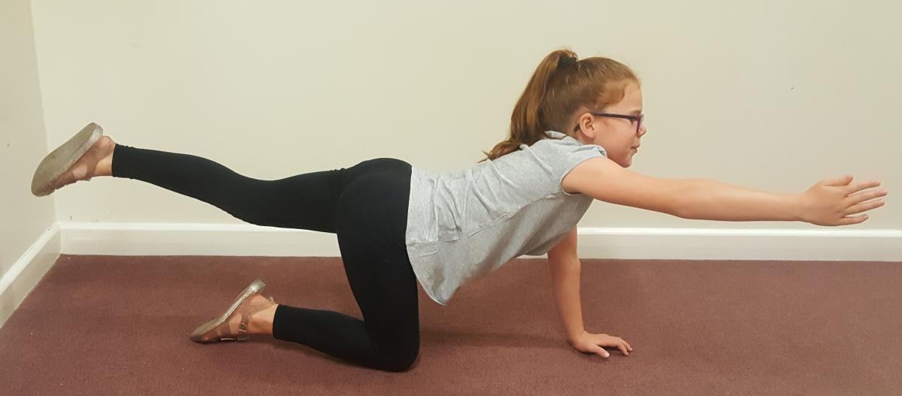
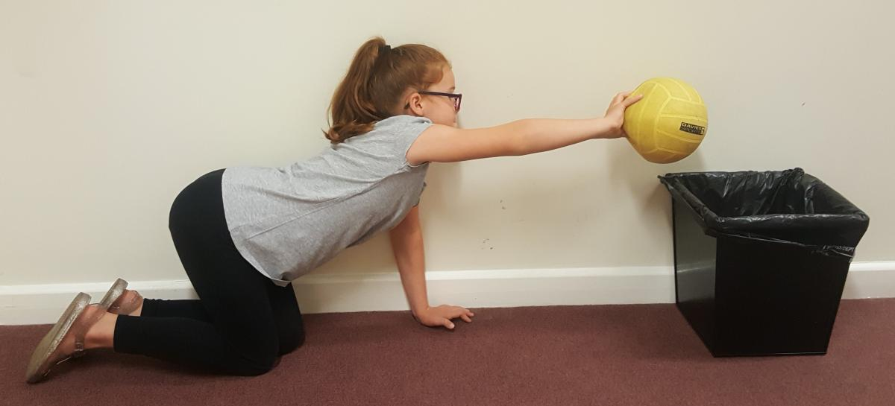
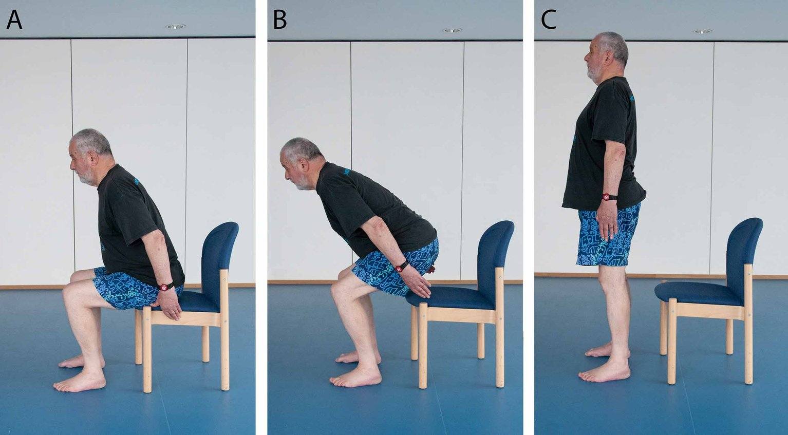
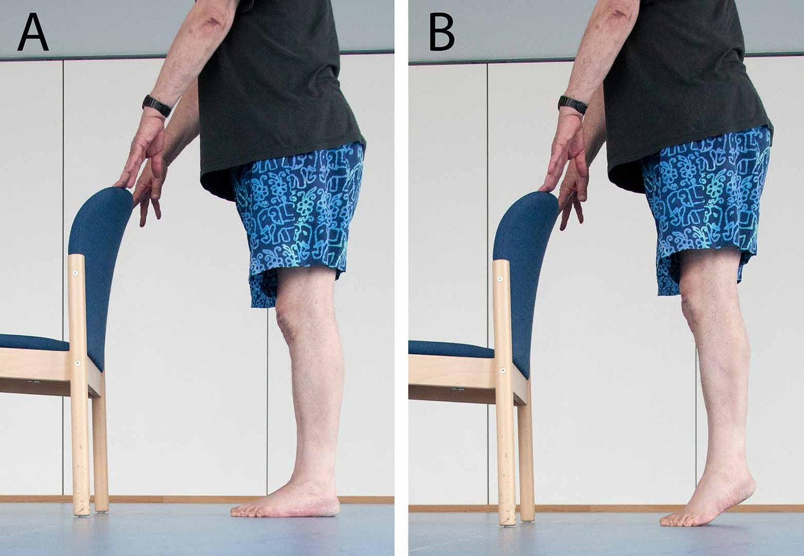
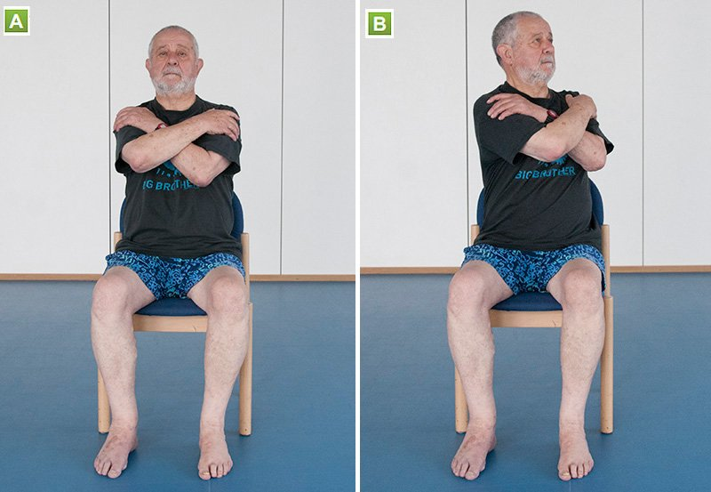
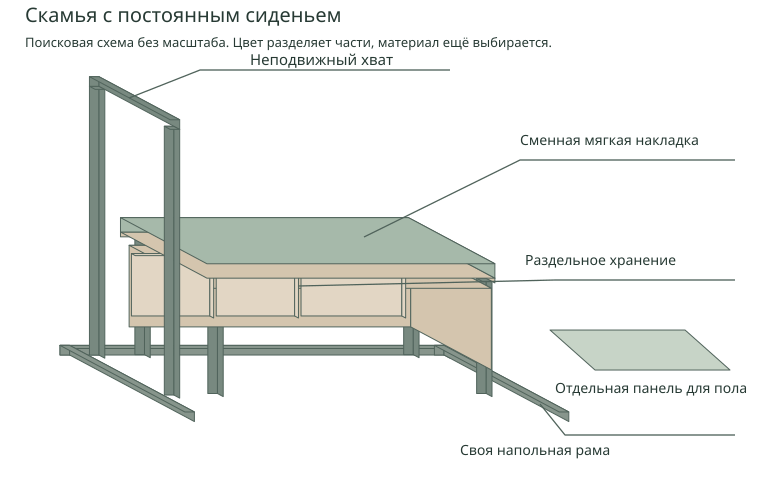
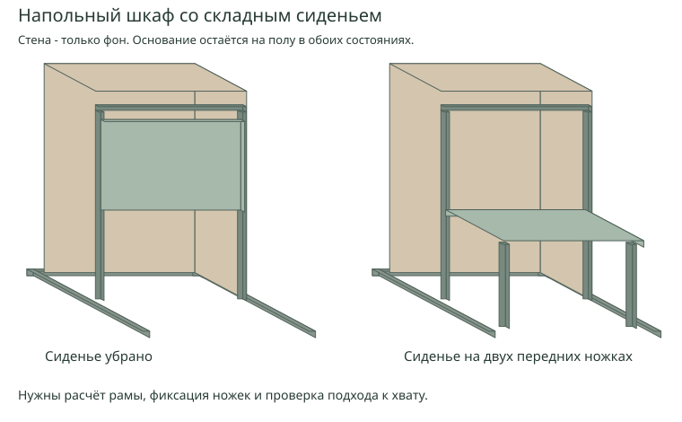
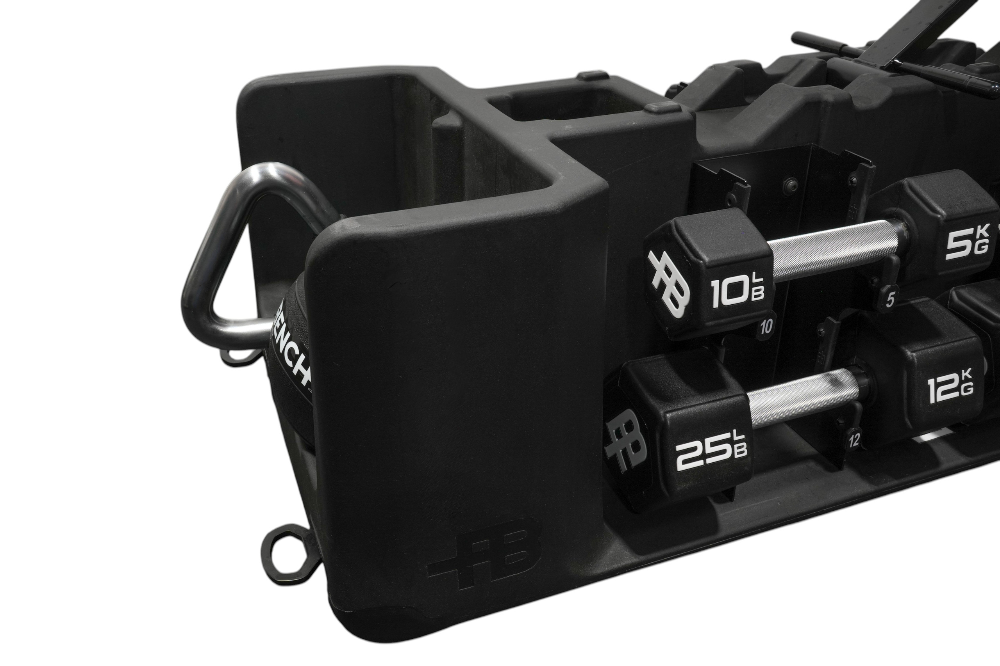

Preliminary_trainer_brief_A4_2026-11-25Предварительное задание на эскиз
Начало разработки модели по упражнениям, аналогам и найденному опыту использования.
Начало разработки модели по упражнениям, аналогам и найденному опыту использования.
Домашнее изделие с мебельной функцией, которое помогает подготовить место, взять нужный инвентарь, выполнить выбранные движения и убрать предметы. Один предмет используется детьми, молодыми взрослыми и пожилыми по очереди.
| Функция | Зачем нужна | Предлагаемое устройство |
|---|
| Покрытие для пола | Детские движения на четвереньках и лёжа; отжимание с коленей и боковая планка молодых взрослых. | Отдельная разворачиваемая панель с собственным местом хранения. Стыки располагаются вне основных контактов тела. |
| Неподвижное сиденье | Вставание, поворот корпуса сидя и дополнительная тяга ленты сидя у пожилых. | Проверить посадку со стопами на полу; не переносить чужую высоту автоматически. Потребность в помощи руками уточняется индивидуально. |
| Поддержка рукой | Подъём пяток у опоры и возможная помощь при переходах. | Отдельный неподвижный хват на собственной силовой раме. Устойчивость проверить и без хранящихся гантелей. |
| Раздельное хранение | Лёгкий предмет для ребёнка, гантель или пара для молодого взрослого, панель и резервная лента. | Не открывать всю скамью ради одного предмета. Разделить лёгкое доступное хранение и доступ к тяжёлому инвентарю. |
Предварительное задание на эскиз. Предложения помощника, требующие выбора автора и проверки; не рабочая конструкторская документация.
Сохраняем все три группы и установку без сверления. Основные действия: ребёнок на четвереньках и лёжа; молодой взрослый с ковриком и гантелями; пожилой сидя и стоя у неподвижной опоры. Дополнительные примеры остаются резервом.
Сначала сравниваем простую скамью и напольный шкаф. Скамья - первый кандидат для проверки посадки, доступа и хвата с меньшим числом шарниров. Это рекомендация помощника, не окончательный выбор формы.
Движения определяют части изделия
Ранее выбранные примеры показаны словами и исходными изображениями, без кодов.
Ранее выбранные примеры показаны словами и исходными изображениями, без кодов.
Дети

Рука и противоположная нога
Дотянуться до мягкого предмета Поднять таз лёжа
Поднять таз лёжаНужны покрытие под ладонями, коленями и спиной, свободное вытягивание и место взрослого. В нашем изделии используются отдельная панель и лёгкое хранение; высокая скамья этим действиям не требуется.
Нужны покрытие под ладонями, коленями и спиной, свободное вытягивание и место взрослого. В нашем изделии используются отдельная панель и лёгкое хранение; высокая скамья этим действиям не требуется.
Молодые взрослые
 Отжаться с коленей
Отжаться с коленей Присесть с гантелью
Присесть с гантелью Наклониться с гантелями
Наклониться с гантелямиНужны панель и доступ к свободным весам. Корпус и открытые детали остаются вне движения головы, коленей, таза и гантелей. Взять предмет должно быть возможно без переноса всей скамьи.
Нужны панель и доступ к свободным весам. Корпус и открытые детали остаются вне движения головы, коленей, таза и гантелей. Взять предмет должно быть возможно без переноса всей скамьи.
Пожилые

Сесть и встать
Поднять пятки у опоры
Повернуть корпус сидяНужны подобранное сиденье и неподвижная поддержка рукой. На первом макете проверяются стопы, подход, движение локтей и высота хвата. Нагрузка на хват проходит через собственную раму в пол.
Нужны подобранное сиденье и неподвижная поддержка рукой. На первом макете проверяются стопы, подход, движение локтей и высота хвата. Нагрузка на хват проходит через собственную раму в пол.
Детские изображения - примеры из детской терапии для анализа контактов. Возрастные границы и индивидуальная применимость не установлены. Дозировки и масса весов здесь не назначаются.
Источники: NHFT, ACE, Kathryn Alexander / Becca Ewing, NHS
Скамья с постоянным сиденьем
Предложение для эскиза, не выбранная автором конструкция и не чертёж изготовления.
Предложение для эскиза, не выбранная автором конструкция и не чертёж изготовления.

Устройство: Горизонтальное хранение на своей напольной раме; мягкое сиденье, отдельный выход панели, фиксированный хват у короткой стороны. Перед сиденьем нет напольной перемычки; отсеки открываются отдельно от сиденья.
Плюс: Меньше действий подготовки; сиденье не требуется раскрывать. Проще изолированно исследовать посадку, хват и доступ к весам.
Ограничение: Постоянно занимает пол. Неподвижный хват и увеличенная база могут мешать подходу; размеры нельзя принимать без натурной компоновки.
Размеры для рисунка: корпус 900×450 мм, верх сиденья 450 мм, высота хвата 900 мм, база 1200×650 мм. Это пробная геометрия, а не эргономический диапазон и не результат расчёта.
Как использовать: Первый кандидат для макета: отделить проверку четырёх функций от разработки складного механизма.
Напольный шкаф со складным сиденьем
Предложение для эскиза, не выбранная автором конструкция и не чертёж изготовления.
Предложение для эскиза, не выбранная автором конструкция и не чертёж изготовления.

Устройство: Вертикальное хранение на самостоятельном основании, открытом спереди для подхода. Сиденье откидывается и получает две передние ножки; хват связан с основной рамой. Стена остаётся фоном.
Плюс: Сиденье можно убрать после занятия; хранение распределяется по высоте. Съёмная панель сохраняет отдельное применение.
Ограничение: Больше операций, шарниров и фиксаторов. Нужно проверить доступность раскрытия, удержание ножек и устойчивость пустого модуля.
Размеры для рисунка: шкаф 700×400×1000 мм; база 800×900 мм; вынос сиденья 450 мм, его верх 450 мм. База остаётся на полу и в закрытом состоянии. Все числа - гипотезы для макета.
Как использовать: Сравнительный кандидат: разрабатывать дальше, если выигрыш хранения оправдает подготовку и усложнение.
Предлагаемый инвентарь
Количество и масса не равны назначению нагрузки конкретному человеку.
Количество и масса не равны назначению нагрузки конкретному человеку.
| Что | Для какого действия | Хранение и статус |
|---|
| Отдельная напольная панель
Одна | Дети и молодые: опора ладони, колена, спины, стопы и предплечья. | Отдельное место без переноса тяжёлых предметов. Предлагаемая основа. Толщину, сцепление и раскладку ещё выбрать. |
| Лёгкий мягкий предмет и цель для перекладывания
Один предмет и одна цель | Ребёнок дотягивается и переносит предмет; взрослый готовит сценарий. | Видимая доступная ячейка, отдельно от весов. Предлагаемая основа. Не заменять силовым мячом. |
| Гантель / пара гантелей
Минимальный набор под выбранные действия | Молодые: присед, наклон; дополнительно тяга и жим. | Гнёзда под реально измеренный инвентарь; отдельное ограничение доступа. Предлагаемая основа. Масса, тип и число ступеней не назначены. |
| Лента
Одна после подбора пользователю | Дополнительная тяга сидя; в исходном примере лента проходит под стопами. | Отдельное проветриваемое место, возможность осмотра и замены. Резерв. Силовое крепление к корпусу пока не требуется. |
| Неподвижный хват и сиденье
Части изделия | Пожилые: поддержка стоя, вставание и поворот сидя. | Не требуют установки взрослой силовой насадки перед базовым действием. Собственные узлы конструкции; расчёт, посадка и устойчивость ещё не проверены. |
Не включаем в основу без нового обоснования: тяжёлый мяч для детской игры, степ, пружинную каретку, педали, моторы, экран и сложную наклонную спинку. Лента остаётся резервом; исходная тяга сидя не требует крепить её к корпусу.
Материалы: что сравнивать
Предпочтение сменным контактам - проектная гипотеза. Окончательные марки не выбраны.
Предпочтение сменным контактам - проектная гипотеза. Окончательные марки не выбраны.




| Часть | Первый кандидат | Что пока не доказано |
|---|
| Силовая рама и хват | Сварная стальная рама с доступными для обслуживания соединениями и покрытием. | Сечение, швы, соединения и масса не выбраны расчётом. Покрытие и закрытие торцов проверяются после выбора технологии. |
| Корпус хранения и основание накладки | Берёзовая фанера с защищёнными кромками; силовую работу панели подтверждать отдельно. | Толщину и сорт уточнить по пролётам, крепежу и паспорту партии. Видимая древесина у аналога не выбирает материал автоматически. |
| Мягкая часть сиденья | Сменная упругая полиуретановая пена в съёмном чехле. | Марку, толщину и жёсткость определить на образцах; плотность сама по себе не задаёт комфорт или срок службы. |
| Обивка | Контрактный винил с действующим паспортом либо ткань/полиуретановое покрытие после сравнения образцов. | Разные методы истирания нельзя сравнивать только по числу циклов. Гарантия и тест не переводятся в годы службы нашего изделия. |
| Панель для пола | Закрытоячеистая полимерная пена, например EVA, со сменной контактной частью и проверенным сцеплением. | Нужны конкретная марка, толщина, поверхность и совместимость с полом. Излишне мягкая поверхность может не подходить стойке. |
| Опоры, гнёзда и фиксаторы | Сменные накладки под основанием, вкладыши в гнёздах, механический фиксатор нагруженного узла. | Не считать магнит, транспортное колесо или карабин готовой опорой для человека. Совместимость накладок с отделкой пола не подтверждена. |
Мой предварительный выбор для сравнения: стальная силовая рама, фанерное хранение, отдельные мягкие накладки и панель. Цель - понятное изготовление и замена изнашиваемых частей. Это не доказательство превосходства над массивом, алюминием или формованным пластиком.
Отзывы и долговечность
Изучены пять источников опыта. У каждого есть пределы применимости.
Изучены пять источников опыта. У каждого есть пределы применимости.
| Источник опыта | Что заметил автор | Как читать |
|---|
| Tom's Guide - Amanda Caswell, 14 июня 2025 | Автор хвалит подсказки и управление, но описывает зависания экрана и ошибки учёта подходов. Это отдельный опыт, а не частота отказов. | Редакционный тест; есть партнёрские ссылки |
| T3 - Matt Kollat, 10 декабря 2022 | Тестировщик отмечает компактную раскладку, жёсткость опоры и выпадение гантелей при перевозке. Это повод проверить удержание предметов, не диагноз всем экземплярам. | Редакционный тест; есть партнёрские ссылки |
| WIRED - Boutayna Chokrane, 3 марта 2025 | Автор отмечает удобство занятий, расходы на установку и зависимость возможностей от подписки. Длительный ресурс этим тестом не установлен. | Редакционный тест |
| Solo Fitness - опыт тренера Debbie Macphee | Тренер положительно оценивает устойчивость и порядок. Публикация размещена продавцом; это не независимое испытание и не проверка многолетнего ресурса. | Рассказ пользователя, опубликованный брендом |
| Gym Emotion - один анонимный отзыв о FREE Naked | В единственном доступном отзыве хвалят установку и устойчивость. Одной записи недостаточно для вывода о долговечности. | Один отзыв в магазине; покупка независимо не проверена |
Вывод по отзывам: удержание весов при перемещении, жёсткость опоры и зависимость от программы надо проверять отдельно. Нельзя ранжировать все аналоги по сроку службы: длительных сопоставимых испытаний не найдено.
У Solo сталь и швы имеют пожизненную домашнюю гарантию, обивка - 90 дней по карточке. Это условия гарантии, а не ресурс и не обещание для нашей конструкции.
У технических материалов сравниваем режим испытания, а не красивое число. На странице Silvertex указан Wyzenbeek 100 000 циклов; в старом европейском каталоге - другой тест Martindale. Они не переводятся друг в друга и в годы службы.
У пены нужны данные о сжатии и восстановлении, у обивки - о шве и очистке. Окончательный выбор делается на доступных образцах, а не по названию «премиум».
Tom's Guide - Amanda Caswell, 14 июня 2025
T3 - Matt Kollat, 10 декабря 2022
WIRED - Boutayna Chokrane, 3 марта 2025
Solo Fitness - опыт тренера Debbie Macphee
Gym Emotion - один анонимный отзыв о FREE Naked
Требования к использованию
Рабочая версия задания. У каждого требования указаны основание и проверяемый результат.
Рабочая версия задания. У каждого требования указаны основание и проверяемый результат.
| Тема | Что требуется | Основание и критерий проверки |
|---|
| Пользователи и сценарий | Одно изделие, три группы по очереди. Исследуем уже выбранные движения; не требуем одинаковой нагрузки и одной высоты для всех. | Поручение автора. Показать отдельную последовательность подготовки и занятия каждой группы; возрастные границы уточнить. |
| Установка | Без сверления. Стена не несёт рабочую нагрузку; основание остаётся частью изделия. | Поручение автора. На схеме и макете отсутствует необходимое силовое крепление к стене. |
| Покрытие пола | Отдельная панель для выбранных напольных движений; основная кромка и складка не попадают под контакт тела. | Вывод из движений. Проверить реальные крайние положения тела, сцепление, подход и переход с пола. |
| Посадка | Неподвижное сиденье, место перед стопами и по сторонам для рук. Потребность в помощи учитывается отдельно. | Вывод из движений. Стопы и таз имеют выбранные опоры; вставание и поворот не блокируются рамой или открытым отсеком. |
| Поддержка рукой | Фиксированный хват связан с собственной рамой; не зависит от наличия гантелей в хранении. | Вывод из движений. Выбрать высоту и захват; рассчитать худший случай пустого изделия до нагружения пользователем. |
| Хранение | Раздельные места панели, лёгких предметов и весов. Способ ограничения доступа к тяжёлому ещё выбрать. | Проектное предложение. Один предмет достаётся без перекладывания остальных; закрывание не пересекает кисть и траекторию тела. |
Требования к конструкции и проверке
Рабочая версия задания. У каждого требования указаны основание и проверяемый результат.
Рабочая версия задания. У каждого требования указаны основание и проверяемый результат.
| Тема | Что требуется | Основание и критерий проверки |
|---|
| Подготовка | Не снимать крупную тяжёлую деталь ради одной гантели. Рабочее состояние и фиксация понятны визуально и рукой. | Предложение по аналогам. Записать количество действий и усилия; сравнить варианты на макете, без выдуманного норматива времени. |
| Габариты | Размер хранения, рабочая зона человека и место раскрытых частей учитываются отдельно. | Вывод консультации. Пробные размеры эскиза заменить обмерами тела, прохода и фактических предметов. |
| Материал и обслуживание | Сменные изнашиваемые накладки; доступ к крепежу; документация на пену, покрытие и обивку. | Предварительный выбор. Показать замену накладки и очистку без разборки силовой рамы; проверить образцы. |
| Нагрузки и устойчивость | Допустимая масса пользователя, направления усилий, запас и режимы испытания пока не определены. | Открытый параметр. Сначала расчёт и испытательный план с руководителем/конструктором; иллюстрация не даёт допуска к нагрузке. |
| Стоимость | Целевой бюджет автора неизвестен. Отдельно считать материалы, работу, отделку, механизмы, инвентарь и доставку. | Открытый параметр. Получить сопоставимые предложения мастерских по одному чертежу и комплекту. |
| Результат эскизного этапа | Два варианта с состояниями, человеком, инвентарём, материалами и путём передачи нагрузки. | Текущее поручение. Выбрать направление по макету и сценариям; чертежи изготовления и выбранная форма следуют после этого. |
Стоимость и следующие решения
Ориентиры прайсов на 25 ноября 2026. Полная стоимость изделия пока не определена.
Ориентиры прайсов на 25 ноября 2026. Полная стоимость изделия пока не определена.
| Закупочный пример | Количество | Цена единицы | Подытог |
|---|
| Стальная профильная труба 30×30×2 мм | 12 м | 119.86 руб. | 1438.32 руб. |
| Берёзовая фанера 18×1525×1525 мм, сорт 2/2 | 1 лист | 2400.00 руб. | 2400.00 руб. |
Итого только две позиции: 3838.32 руб. Сечение трубы, толщина листа и расход - ценовой пример, не результат расчёта. Установленная масса рамы и расход деталей здесь не определены.
Открытые прайсы Москвы; не коммерческое предложение под место изготовления автора.
Не включено: Резка, сварка, гибка, покрытие, крепёж, фиксаторы, обивка, пена, вкладыши, опоры, инвентарь, доставка, труд и испытания. Итог изделия по двум позициям не определён.
Цена и функция: Предварительно экономичнее исследовать простой неподвижный каркас и сменные контакты, а не добавлять подъёмную спинку, экран или привод без требуемого движения. Это проектная гипотеза; полную цену подтвердят чертёж и предложения мастерских.
1. Выбрать вместе с автором базовую компоновку и допустимый бюджет; габариты на рисунках пока не утверждать.
2. Сделать полноразмерную ненагружаемую компоновку для посадки, хвата, доступа и рабочего пространства.
3. Заказать образцы материалов и расчёт силовых узлов; затем определить конструкцию, нагрузки и испытательный план.
Цена трубы: Стройсталь
Цена листа: Фанераоптом
Основания выбора и ссылки
Паспорта, отзывы и открытые прайсы. Ссылки кликабельны, без служебных кодов.
Паспорта, отзывы и открытые прайсы. Ссылки кликабельны, без служебных кодов.
SVEZA - технический буклет Interior / Exterior, 2019
Страницы PDF 4-5: у интерьерной и наружной фанеры различается влагостойкость. Общий буклет не заменяет паспорт закупаемого листа.
Zotefoams - паспорт закрытоячеистой пены, июнь 2026
Номинальная плотность 45 кг/м³; остаточная деформация после сжатия указана с режимом испытания. Это пример нужных данных, не выбранная марка нашего коврика.
Spradling Silvertex - текущая техническая страница
Винил на полиэфирной основе; указан тест Wyzenbeek 100 000 циклов. Число не переводится в годы службы или в циклы другого метода.
Spradling Silvertex - европейский каталог в поисковом индексе
В индексированном каталоге указан Martindale более 300 000 циклов, но прямой файл при проверке вернул 404. Для закупки запросить действующий паспорт; разные методы не сравнивать по числу циклов.
Solo Signature - гарантия отдельных частей
В карточке: пожизненная домашняя гарантия на сталь/швы, 90 дней на обивку. Условия гарантии не равны сроку службы и не обещают такой ресурс нашему изделию.
Стройсталь - профильная труба 30×30×2 мм
Проверено 25.11.2026: 119,86 руб./м для партии до тонны, кратность 6 м; рез 36 руб. Сечение используется только для ценового примера, расчётом не выбрано.
Фанераоптом - берёзовая фанера 18×1525×1525 мм, сорт 2/2
Проверено 25.11.2026: 2400 руб. за целый лист. Цена поискового сниппета отличалась; использовано значение открытой карточки.
Основания проекта: консультация 6 ноября - полезные функции через упражнения (09:18-09:59), габариты через движения и опоры (10:53-11:56). Решения автора: все три группы по очереди, без сверления. Ни новая форма, ни нагрузки и материалы пока не утверждены.
Детский источник движений: NHFT
Вставание и поддержка стоя: NHS
Поворот сидя: NHS